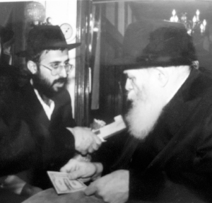

הרב מרדכי (מוטי) ידגר
זכרתי שבכל פעם שהייתי מגיע ל-770, אף פעם לא הצלחתי לברך ברכת ‘שהחיינו’ כשראיתי את הרבי בפעם הראשונה; באותו רגע פשוט הייתי משתתק ולא מסוגל להזיז את הלשון. אך כעת זה סיפור אחר – על כף המאזנים מונחת בריאותן של בנותיי, ומי יודע אם אזכה בפעם הנוספת לבקש את ברכת הרבי?! התאכזבתי מעצמי • בדידי הווה עובדא מו
זכרתי שבכל פעם שהייתי מגיע ל-770, אף פעם לא הצלחתי לברך ברכת ‘שהחיינו’ כשראיתי את הרבי בפעם הראשונה; באותו רגע פשוט הייתי משתתק ולא מסוגל להזיז את הלשון. אך כעת זה סיפור אחר – על כף המאזנים מונחת בריאותן של בנותיי, ומי יודע אם אזכה בפעם הנוספת לבקש את ברכת הרבי?! התאכזבתי מעצמי • בדידי הווה עובדא מופלא שסיפר הרב מרדכי (מוטי) ידגר מצפת, נס שהחל לפני שני עשורים והסתיים באופן פלאי בשנה שעברה
מאת נתן אברהם

“לפני כשנה חווינו המשך לסיפור מופת מפעים שחווינו החל מחנוכה תשנ”ב והסתיים השתא בשנת תשע”ג, כאשר שתי בנותיי הגדולות שנישאו, זכו והרחיבו את משפחתן לאחר מספר שנים של המתנה. האחת זכתה לחבוק תאומות והשניה בן שני, לאחר חמש שנים. כשזה קרה, הרגשתי שהגיע הזמן לספר את הסיפור שלנו”.
נימה עזה של התרגשות ניבטת מקולו של הרב ידגר, איש חינוך וותיק, שעה שהוא מתאר את השתלשלות הסיפור. הוא נזכר ומזכיר כל פרט ופרט כאילו הסיפור התרחש אך לפני מספר ימים ולא עברו מאז עשרים שנה. כששמעתי את פרטי הסיפור, את הדאגה הרבה שליוותה אותו ואת רעייתו באותם ימים כמו גם לפני כשנה, ואת עוצמת הנס שהתרחש אז ולפני שנה וחצי, הבנו גם הבנו את מקור ההתרגשות.
הראשונים לשמוע את הסיפור המופלא הזה היו מתפללי בית הכנסת ‘הרומנים’ בצפת בו מתפלל הרב ידגר שנים ארוכות ונמנה על גרעין המתפללים החב”די הראשון. בפעם השנייה סופר הסיפור בשלימותו על ידי חתנו בעת סעודת הברית ועורר התפעלות רבה בין המשתתפים הרבים, שחלקם הגדול לא נמנה היה על חוג חסידי חב”ד.
כעת אנו שמחים לפרסם אותו בפעם השלישית במסגרת זו.
• • • • •
לקראת חודש כסלו של שנת תשנ”ב, התעורר אצלי רצון עז לטוס ל-770 ולשהות בד’ אמותיו של הרבי מלך המשיח. במשך שנים מספר מאז נישואנו לא התאפשר לנו לטוס מסיבות שונות, החל מלידת הבנות וכלה בעבודה החינוכית שמילאה את סדר היום. באותה עת הציפה אותי תחושה עזה שאני מוכרח לשהות בחצרות קודשנו בימי החנוכה – ויהי מה.
הדחף היה עצום, זה משהו שקשה להסביר במילים, אני זוכר את התחושה הזו שלפתה אותי. איש לא הבין את העקשנות שלי והאמת שגם לי לא היה נימוק ברור. זה פשוט געגועי בן לאביו, חסיד לרבו, למעלה מטעם ודעת.
בסביבה הקרובה אלי הציעו שאדחה את הטיסה לחדש החגים המשופע ברגעי הוד והדר במחיצת הרבי, אך הרצון שלי היה כה חזק, שלא נתתי לעצמי לשנות את החלטתי. “אטוס כעת, ובסייעתא דשמיא אטוס גם בתשרי”, אמרתי למי שיעץ לי.
כמה חודשים קודם לכן, שתי בנותיי הגדולות לקו במחלת עור מוזרה. זה החל במעין פטרייה קטנה שצצה אצלן בשתי הידיים ועד מהרה התפשטה לכול הגוף – מהרגל ועד ראש. מצב בהחלט לא נעים לילדות בנות שש ושבע, וזאת בלשון המעטה. מה שהיה מפחיד בכול הסיפור הזה, שמדי יום ראינו את זה מתפשט ומתעצם, אך ידינו הייתה קצרה מלסייע. מפליא הדבר שהפטרייה הזו תקפה את שתיהן בלבד ולא אף אחד אחר מבני הבית.
מהר מאוד הבנו שלא מדובר בבעיית עור ברת חלוף אלא בבעיה יותר רצינית. רצנו איתן לרופא הילדים המומחה בצפת, ד”ר למפיט. הוא בדק אותן, הנפיק דיאגנוזה ונתן משחות ותרופות. חלפה תקופה והבנו שאף אחת מהמשחות לא מועילה; להפך, הפטרייה ממשיכה להתפשט אצל שתי הבנות במקביל. בד בבד ניסינו רופאים נוספים וכן שיטות רפואיות שונות, אך מאום לא עזר.
ד”ר מצגר: “אין מזור לבעיה הזו”
כשראינו שהמצב מחמיר והבנות מתייסרות, פקדנו שוב את חדרו של ד”ר למפיט והוא החליט להפנות אותנו למומחה הכי גדול בארץ ישראל לרפואת עור ילדים, ד”ר מצגר. זה האחרון ישב באותם ימים בבית הרפואה ‘ביילינסון’ בפתח תקווה.
הוא תיאר במכתב ההפניה את מה שכבר ניסה וקבע עבורנו תור אצל אותו הרופא. קיווינו שאותו רופא מומחה ימצא מזור לבעיה שאיש מן הרופאים לפניו לא הצליח לפתור. ואכן, ביום שנקבע עשינו את דרכנו אל מרפאתו שבמרכז הארץ.
לאחר שסיים את בדיקותיו קבע לתדהמתנו שלא ניתן לרפא את הבעיה, אלא רק לתת מרקחת משחתית שתקל את הכאב. אני זוכר היטב את המילים שיצאו מפיו: “אין מזור לבעיה הזו”.
יצאנו ממנו נבוכים, אבדי עצות ובעיקר אפופי דאגה. אם ד”ר מצגר לא יכול לטפל בבעיה, מי כן יוכל לעשות זאת?! והאם חלילה נגזר על בנותינו לחיות כל חייהן עם המטרד הזה?
חזרנו הביתה במצב רוח שפוף. לראות את הילדות סובלות מגירודים ומפצעים כשמראה העור שלהן מלא בסימנים פטרייתיים מכוערים, זה משהו שאני לא מאחל לאף הורה.
לכן, כשהודעתי לרעייתי על ההחלטה לטוס לבית חיינו, היא נתנה את הסכמתה בתנאי שאאזור אומץ ואבקש מהרבי ברכה עבור הבנות. כמובן שהסכמתי לכך, וכעת רק היה עלי לאזור את האומץ ולבקש את הברכה מהרבי.
בדיעבד, אם לא הייתי מתעקש על טיסה בחנוכה והייתי דוחה את הנסיעה לקיץ, לא הייתי זוכה לעבור פעמיים במעמדי חלוקת הדולרים שהתקיימו בחנוכה.
חלוקת דולרים ותחושת החמצה
ימים ספורים לפני חג החנוכה נחתי בשדה התעופה ‘קנדי’, זאת לאחר עשור שלא ביקרתי ב-770. ההתרגשות הייתה עזה, הרגשתי כמו בן שהיה בגלות ושב כעת לבית אביו. דמעות הציפו את עיניי.
מספר ימים אחר כך, בנר ראשון של חנוכה התקיים מעמד של חלוקת דולרים. זכיתי לקבל דולר מידו הקדושה של הרבי, אך למרות התכנון המדוקדק איך ומה להגיד, הרי כשעמדתי מול הרבי לשוני נעצרה ולא הצלחתי להוציא הגה מפי.
יצאתי החוצה מ-770 עם הדולר ביד וחשתי תחושה עמוקה של החמצה על שלא הצלחתי לבקש את הברכה ברגע האמת.
זכרתי שבכל פעם שהייתי מגיע ל-770, אף פעם לא הצלחתי לברך ברכת ‘שהחיינו’ כשראיתי את הרבי בפעם הראשונה; באותו רגע פשוט הייתי משתתק ולא מסוגל להזיז את הלשון. אך כעת זה סיפור אחר – על כף המאזנים מונחת בריאותן של בנותיי, ומי יודע אם אזכה בפעם הנוספת לבקש את ברכת הרבי?! התאכזבתי מעצמי.
ההפתעה: חלוקת ‘דמי חנוכה’
להפתעתי ולהפתעת כל קהל החסידים, יום לפני טיסתי חזרה לארץ ישראל, הודיע הגבאי שבשעה 2:00 יחלק הרבי שטר של דולר לצדקה עם מטבע של דולר ל’דמי חנוכה’. הייתי נחוש שלא לוותר על ההזדמנות הזו שנקרתה לפניי.
חלוקת הדולרים התקיימה בקומה העליונה של 770, ועד מהרה השתרך תור של אנשים. עמדתי בפרוזדור של הקומה הראשונה כשאני שרוי במתח עצום. היה ברור לי שלא משנה כמה אתרגש, עלי לבקש ברכה עבור בנותיי. בכול הזמן ההמתנה שיננתי ביני לבין עצמי את נוסח בקשת הברכה שאומר לרבי. הנוסח השתנה מדי כמה דקות, ובעיקר הלך והתקצר… הנוסח האחרון שנקבע היה: ‘רפואה שלמה לבנות’. קיוויתי וייחלתי רק שהפעם קולי לא יקפא.
לאחר המתנה לא ארוכה במיוחד, זכיתי לעמוד מול פני קודשו של הרבי, העזתי וביקשתי את הברכה. הרבי הנהן בראשו ואמר “ברכה והצלחה” וקיבלתי מידיו הקדשות שקית ‘דמי חנוכה’ ובה היו אמורים להימצא שני דולר – אחד בשטר ואחד במטבע.
כשיצאתי החוצה נרעד ונרגש מעוצמת המעמד, פתחתי את השקית ולתדהמתי הרבה ראיתי שיש שם שלושה דולרים, שטר אחד ושתי מטבעות, ולא כפי שכולם קיבלו מטבע אחת. תוהה ומבולבל, מנסה להסדיר את נשימותיי ואת מחשבותיי סרתי על עקבותיי ושיתפתי את אחד המזכירים בטעות. שאלתי הייתה: האם עלי להחזיר את המטבע.
“הרבי לא טועה”, הצליף בי מוסר חסידי.
חזרתי לבית מארחיי כשאני מוצף בהתרגשות. הנה אני מבקש על שתי בנותיי והרבי, הרועה הנאמן, נותן לי שקית עם שתי מטבעות. הרגשתי שיד אלוקים היא זאת שהכניסה את הדולר הנוסף. מה הסבירות שתהיה טעות ומה הסבירות שאני אזכה בטעות הזו חשבתי לעצמי, והתמלאתי באהבה עזה לרבי.
כשחזרתי למחרת ארצה, הייתי מלא באמונה שמכאן ואילך עלינו להסיר דאגה מלבנו. אמנם הרופא המומחה קבע מה שקבע, אך יש מנהיג לבירה זו.
ואכן, כמו בסיפורי הבעל שם טוב, הנס הגדול קם והיה! לא עשינו דבר מלבד לסוך להן את העור בשמן אמבטיה פשוט, והלא יאמן אכן קרה. בעיית העור שכל העת התפשטה והעמיקה, החלה להיעלם ולסגת עד שנעלמה כליל כלא הייתה. כמו שזה בא ביום לא בהיר, כך זה נעלם לפתע פתאום.
קבענו תור אצל ד”ר למפיט. ביקשתי שהוא יראה זאת במו עיניו. כשהוא ראה את הבנות, גם הוא הגיב בתדהמה גלויה והיה מופתע מאד. לפי דברי המומחה הגדול, ד”ר מצגר, מדובר בבעיה שהייתה צריכה ללוות אותן כל ימי חייהן והנה הבעיה נעלמה ולא נותר ממנה אף זכר – אצל שתיהן!…
כמובן שסיפרתי לרופא על הנסיעה לחצרות קודשנו ועל הברכה שזכינו לקבל מהרבי יחד עם ההשגחה העליונה הצרופה כשקיבלנו שתי מטבעות של דולר, והוא נרגש והודה שיד שמימי התערב בפתרון הבעיה”.
• • • • •
הרב ידגר עוצר מעט את שטף דיבורו ומבקש להוסיף חלק נוסף לסיפור, מדהים לא פחות שהתרחש בשנה האחרונה:
“שתי בנותיי בגרו בינתיים, הגיעו לפרקן, נישאו והקימו את ביתן. הבת הבכורה חבקה בן זכר שנה לאחר נישואיה, אך חלפו ארבע שנים ועדיין לא נפקדה. הבת השנייה נישאה לפני שלוש שנים וגם אצלה לא שמענו בשורות משמחות שנתיים ויותר מאז נישאה.
ערב אחד כשאני יושב וחושב עליהן, נזכרתי במטבעות הדולר שהרבי העניק להן לרפואה שלימה. ‘מה אתה מחזיק את זה אצלך?’ הלקיתי את עצמי במחשבתי, ‘הרבי הרי נתן את המטבעות עבורן, והן כבר מספיק גדולות כדי לשמור על זה בכוחות עצמן’. כמובן שקיוויתי שעצם החזקת המטבע אצלן, יהווה הדבר מעין סגולה ויחיש את הישועה אצל שתיהן.
חשבתי ועשיתי, וכבר למחרת טלפנתי אליהן, הזכרתי להן נשכחות על אודות המטבעות שזכו לקבל מהרבי וביקשתי שיבואו לקחתן. האחת לקחה את המטבע ונשאה אותו עמה בקביעות, והנה חלפו חודשיים ימים בלבד והיא התבשרה בבשורה טובה.
אחותה השנייה, הצעירה יותר, השחילה את המטבע לשרשרת שענדה ואף היא התבשרה שנפקדה בתוך זמן קצר. בני המשפחה היו בהלם. הרגשנו בבירור שהמטבעות חוללו נס נוסף לאחר שנות המתנה ארוכות ומייסרות.
חלפו תשעה חודשים, הבת הבכורה ילדה בן נוסף, ואילו הבת הצעירה ילדה בנות תאומות. השמחה הייתה גדולה – ואז הרגשתי צורך עז לפרסם את הנס שזכינו לו”, חותם הרב ידגר את סיפורו המרגש.
“זכינו שהרבי נמצא איתנו, וכמו בעבר כך גם היום הוא מחולל ניסים ונפלאות. עכשיו רק נותר לנו להמתין לאושר הגדול בהתגלותו של הרבי בגאולה האמיתית והשלימה”.